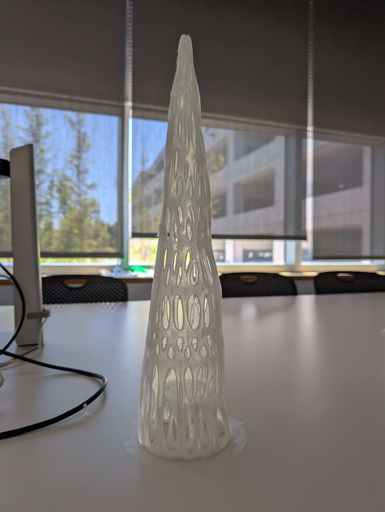

Crown


A hand-crafted crown constructed from wooden dowels and covered with sewn fabric. The piece explores "The Virgin Queen Elizabeth” and strength in feminine solitude.
Crystal



These are the crystals I 3D Printed last summer for MAD. We displayed our project, "Crystal Consciousness" that depicted a cave that "With the measurement of your human pulse, the cave beats with responding optic fiber lights" EEG data was transferred into audio signals as a modulating source within the virtual eurorack and a projection of the body of a nerve cell that moved and changed color with the brain data. With the use of Blender modeling and 3d printing, we hung transparently colored crystals from the ceiling as well as glass pieces as light transitioners. My role was in fabrication, 3d modeling and 3d printing.
Scissor


Designed and sewn bonnet on model. A candlelit poetry portrait series exploring intimacy, feminity, and power. Shot in a space lit only by hand-held candles, the images focuses on a subject wrapped in a lace veil. The warm, low light and shallow depth of field isolate her changing postures: a glance, a shadow across the collarbone, the candle's reflection in the eye. The series was made using only two women and candlelight, no supplemental lighting or models, to emphasize intimacy and more attention on the female.